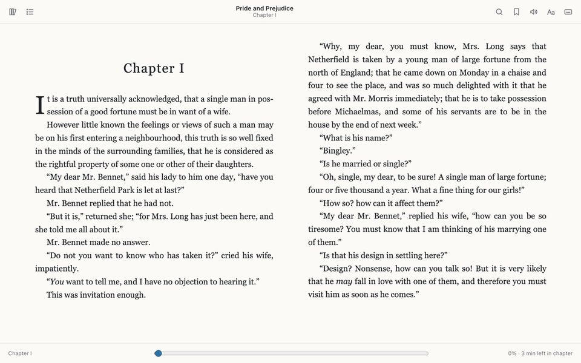

How to open EPUB files on Windows 11 and 10
Short answer: Windows doesn’t include an EPUB reader. Microsoft removed EPUB support from Edge in 2019 and pointed people to reader apps in the Microsoft Store instead, so an .epub file has nothing to open it until you add a reader.
Good free choices: Thorium Reader or calibre if you want a desktop app, a Chrome extension if you’d rather read in the browser, or Google Play Books if you don’t want to install anything.
Updated 15 October 2026. Microsoft’s position is from its Edge help page.
Why Windows can’t open EPUB on its own
The original Edge browser could read EPUB books. Microsoft’s help page now says “Microsoft Edge will no longer support e-books that use the .epub file extension” and sends readers to recommended EPUB apps in the Microsoft Store. The current Edge doesn’t read EPUB either, and neither does Chrome: both treat an .epub link as a download.
Option 1: read EPUB in Chrome with an extension
This suits you if you already live in Chrome and want books to open straight from links. The steps use Quire EPUB Reader, which we make.
- Install the extension in Chrome
Add Quire EPUB Reader from the Chrome Web Store. Chrome warns that it can “read and change all your data on all websites”; it needs that so a click on an .epub link on any site opens in the reader, and it has no content scripts. Quire has been tested in Chrome on a Mac but not yet on Windows. If something misbehaves, please report it.
- Open a book from File Explorer
Click the Quire icon in Chrome’s toolbar to open your library (pin it from the puzzle-piece Extensions menu if you don’t see it). Drag the .epub file from File Explorer onto the page, or click Open EPUB and choose it.
- Or click an .epub link on a website
The book opens in a reader tab instead of going to your Downloads folder.
- Read
Arrow keys turn pages, T shows the contents and ? lists every shortcut. The book stays in your library, so it reopens later without the original file.

Quire keeps your books in your Chrome profile and doesn’t sync them. It can’t open DRM-protected books, and read aloud uses the voices installed in Windows.
Option 2: Thorium Reader, a free desktop app
Thorium Reader is a free, open-source reader from EDRLab for Windows 10 and 11, macOS and Linux, and it is also in the Microsoft Store. Install it and add your .epub to its library. It has read aloud, full-text search, sepia and night modes and bookmarks, works with screen readers such as NVDA and JAWS, and can open library books protected with Readium LCP. It is a good choice for long reading sessions or if you need accessibility features.
Option 3: calibre, for a big collection
calibre is a free, open-source e-book manager for Windows, macOS and Linux, with a built-in viewer.
- Click Add books (or press A) and choose the .epub file.
- Select the book and click View (or press V).
calibre’s manual notes that you can also start the E-book viewer on its own from the Start menu, which is handy when you just want to read one file without adding it to a library. calibre also converts between formats.
Option 4: Google Play Books, with nothing to install
In your Play Books library, click Your books, then Upload files, choose the .epub and click Select. The book is uploaded to your Google account, so you can carry on reading on your phone. If you’d rather your books stayed on your PC, use one of the other options.
Which one to pick
- Books from websites, read in the browser: a Chrome extension.
- Long reading, read aloud or a screen reader: Thorium.
- Hundreds of books, or converting formats: calibre.
- Reading on your phone too: Google Play Books.
- You downloaded an .acsm file, not an .epub: that is a ticket for a DRM-protected book. See how to open an .acsm file.